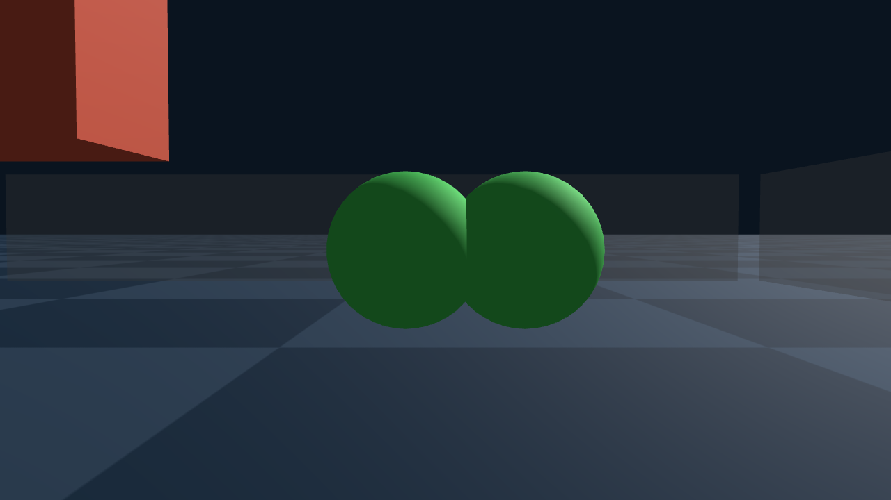

Week 1（TODO 2026-09-26）
在服务器上跑通了 Genesis + lib IPC（Genesis 的 IPC 接触底层由 libuipc 计算）：5 个 Genesis IPC 例子和 4 个 Genesis 官方 IPC 测试场景，共 9 段视频（官方测试 4 个跑完，其中官方断言通过 2 个）。然后做了「一堆物体扔进盒子」（官方 ipc_objects_falling 场景加一个盒子），对 8 个 IPC 参数做了单变量扫描，共 25 个配置。主要发现：初始穿插会被拒绝开跑；表面全程没有穿透；\(\hat d\) 越小越难解，且不能大于软体表面网格的边长；Genesis 默认 κ 1e9 会被 libuipc 夹到区间上界；官方软球 E = 1 kPa 太软，会被压塌，所以主结果用 E = 1e5。
IPC 原理、Genesis + libuipc 官方例子与官方测试、盒子实验与参数扫描、对生成训练数据的意义。
本项目的训练标签由 IPC 仿真生成。IPC（Incremental Potential Contact）在两个表面接近时加一项随距离减小而急剧增大的能量，把它们推开。本周跑通了 Genesis + libuipc：Genesis 是物理仿真平台，其 IPC 接触由底层的 libuipc（GPU 上的 IPC 求解库）计算。
- 先看官方例子和官方测试是否能原样复现：5 个官方例子、4 个官方 IPC 测试场景
- 再在受控场景里逐个改参数：一堆物体扔进盒子，每次只改一个量，共 8 组单变量扫描、25 个配置（含对照档）；本页讲其中与碰撞直接相关的 5 组，看接触间隙、求解难度和耗时怎么变
本页结论：用 Genesis + libuipc 生成数据时，接触刚度必须显式设定并确认未被截断，作用距离要记录且不大于最短表面边长，初始状态必须无穿插，求解要真正收敛。
IPC 的接触能量
后面的实验现象都由本节两个式子解释：接触能量，以及 libuipc 对接触刚度的截断区间。
1.1 原版 IPC 的 barrier 能量
每一对靠得足够近的图元都加一项 barrier 能量，距离为 0 时能量无穷大。 图元对指点–三角形或边–边这两种可能发生接触的最小单位。
\[b(d)=-(d-\hat d)^2\ln\dfrac{d}{\hat d}\ \ (0<d<\hat d),\qquad b(d)=0\ \ (d\ge\hat d),\qquad E_{\text{contact}}=\kappa\sum_{k\in C} b(d_k)\]
- \(d\)：一对图元之间的距离；\(d\) 越小，\(b(d)\) 越大，\(d\to0\) 时趋于无穷，相当于一堵无穷高的墙
- \(\hat d\)：作用距离，两个表面距离小于它时 barrier 才起作用，大于它时完全没有接触力
- \(\kappa\)：barrier 的刚度；\(\kappa\) 越大墙越陡，物体陷进作用层越浅
- \(C\)：所有距离小于 \(\hat d\) 的图元对，\(k\) 是其中一对；总接触能量是逐对求和，不按面积加权
静止时物体停在作用层里：托住重力的推力只在 \(d<\hat d\) 时存在，所以接触面之间会留一条比 \(\hat d\) 略小的缝。
1.2 libuipc 的写法与 κ 截断区间
libuipc 用距离平方写 barrier，并乘了时间步长平方。
\[B(D)=\kappa\,\Delta t^{2}\,(D-\hat d^{2})^{2}\Big[\ln\frac{D}{\hat d^{2}}\Big]^{2},\qquad 0<D<\hat d^{2}\]
- \(D=d^2\)：距离的平方；\(D\to0\) 时同样无穷大，\(D\ge\hat d^{2}\) 时为 0，性质与 1.1 相同
- \(\Delta t\)：时间步长
Genesis 自己不算 barrier，只把每个物体的接触刚度交给 libuipc。 两个物体之间取调和平均 \(\kappa_{ij}=\dfrac{2\,r_i r_j}{r_i+r_j}\)，\(r_i\) 是物体 \(i\) 设定的接触刚度；调和平均由较软的一方主导。
libuipc 再把 κ 截断到一个按场景算出的区间里：
\[\kappa_{\min}\approx\frac{10^{11}\,s\,L^{2}\,\bar m}{4\,\hat d^{4}\,\Delta t^{2}},\qquad \kappa_{\max}=100\,\kappa_{\min}\]
- \(\bar m/\Delta t^{2}\)：每个顶点的惯性刚度，\(\bar m\) 是全场景所有顶点的平均质量。barrier 必须比惯性更硬，才能在一步之内挡住物体
- \(\bar m\) 越大，区间越高；\(\Delta t\) 缩小 10 倍，区间抬高 100 倍；\(\hat d\) 减半，区间抬高 16 倍
- \(L\)：整个场景包围盒的对角线长度；\(s\)：libuipc 内部固定的缩放系数
- 设定值低于 \(\kappa_{\min}\) 就取 \(\kappa_{\min}\)，高于 \(\kappa_{\max}\) 就取 \(\kappa_{\max}\)；整个场景只用一个区间
设置：盒子场景官方默认值：\(\hat d=10\) mm，\(\Delta t=0.02\) s，接触刚度设定 \(10^9\) Pa，\(s=10^{-16}\)，\(L=3.69\) m，\(\bar m=0.0184\) kg，代入得区间 \([1.57\times10^{5},\,1.57\times10^{7}]\) Pa，与 libuipc 日志打印值一致；设定的 \(10^9\) Pa 实际被截断为 \(1.57\times10^{7}\) Pa。
IPC 的接触由作用距离 \(\hat d\) 和刚度 \(\kappa\) 两个量决定；libuipc 会按全场景的平均顶点质量、步长和 \(\hat d\) 截断 \(\kappa\)，设定值不一定是实际值。
Demo：Genesis + libuipc 官方例子
第 1 节的能量在实际场景里的样子。以下官方例子原样运行，相机取官方代码给定的位置；物理在 GPU 上由 libuipc 计算。
布料、刚体、软球一起落地
设置：Genesis 官方例子 ipc_objects_falling，原样运行。
动量守恒检验：零重力下刚体撞软球
- 末步相对动量误差 1.06%：碰撞前后系统总动量基本守恒
设置：Genesis 官方例子 ipc_momentum，原样运行。
机械臂夹起软方块
- 刚体与软体双向耦合：机械臂驱动方块，方块的反力也作用回机械臂。Genesis 的刚体在 libuipc 里以仿射体（affine body，12 自由度、可整体仿射变形的近刚体）表示，刚度 100 MPa
设置：Genesis 官方例子 ipc_robot_grasp_cube，原样运行。
一堆物体扔进盒子
- Genesis 没有这个官方例子：在 ipc_objects_falling 场景里加一个开口盒子和更多同款物体，第 4 节的参数扫描都在这个场景上做
键盘遥控机械臂抓起一块布
设置：Genesis 官方例子 ipc_robot_cloth_teleop，本地带窗口运行、键盘遥控录屏。
Genesis + libuipc 的官方例子可在服务器上原样复现，刚体、软体、布料之间的双向接触均能正常求解。
Demo：官方 IPC 测试
官方例子只看画面，官方测试带有断言，能检验结果是否符合预期。4 个场景原样运行：2 个通过，2 个未通过，未通过的原因都已查清。
3.1 离地间隙随接触刚度变化（未通过）
- 期待：接触刚度越大，barrier 越陡，方块离地越高
- 实测：5 个方块离地 6.39 / 6.39 / 6.39 / 7.00 / 8.18 mm，前 3 个相同，断言未通过
- 原因是 κ 截断：前 3 个方块设定的刚度低于 \(\kappa_{\min}\)，被截断成同一个值（1.2）
设置：5 个方块落地，接触刚度从 \(10^2\) 到 \(10^6\)；断言：不横向漂移、最终停住、刚度越大离地间隙越大。
3.2 斜向重力下的地面滑动（未通过）
- 期待：离地高度与摩擦系数无关
- 实测：摩擦系数 0.04 的方块比其他方块高 9.3 mm，它从第 66 步起向前翻，最终倾斜 16°
- 原因是求解提前终止：libuipc 默认开启半隐式提前终止，Newton 迭代未收敛就停止，误差逐步积累导致翻倒。只关掉这一项，最大倾角 0.24°，断言通过；步长减半也能通过，最大倾角 0.31°
设置：重力带水平分量，5 个方块摩擦系数 0–0.16；断言：不穿地、离地高度与摩擦无关、摩擦越小滑得越远。
3.3 布料盖在物体上（通过）
- 布料确实软：蓝色布料初始是平的，最终高低差 127 mm，中间被方块和球顶起、四周垂下
设置：物体和布料落地；断言：全部落到地面且不穿地、没有飞走、最终静止、布料盖在所有物体上面。
3.4 夹住布料一角拖动（通过）
- 被夹的角始终跟着夹子走，布料没有脱落
设置：两个方块夹住布料一角，先静置再拖着画一圈；断言：布料没掉、被夹的角始终跟随夹子。
两个未通过的官方测试分别来自 κ 截断和 Newton 提前终止；前者使设定刚度失效，后者使结果未收敛，二者都必须在生成数据时排除。
盒子实验与参数扫描
在盒子场景里每次只改一个量，看停住时接触面之间的最短距离（下称间隙）、每帧 Newton 迭代次数（求解难度）和总耗时。除初始穿插一组外，各档 libuipc 的穿透检查均未报告穿透。
设置：对照档取官方本例与 Genesis 默认：\(\Delta t=0.02\) s、\(\hat d=10\) mm、接触刚度设定 \(10^9\) Pa、摩擦系数 0.1、软球用官方球网格；软球杨氏模量取 \(10^5\) Pa（官方 \(10^3\) Pa 过软，在盒子里会被压塌）。物理时长 2 s。盒子墙画成半透明。
4.1 对照档：官方默认参数
| 接触对 | 软球–布 | 软球–地面 | 方块–布 | 方块–地面 | 布–地面 |
|---|---|---|---|---|---|
| 间隙（mm） | 9.85 | 8.47–8.63 | 9.64 | 7.32–7.87 | 9.73 |
- 每一对接触面都停在作用层里：间隙 0.73–0.99 倍 \(\hat d\)，不贴死，与 1.1 的推断一致
- 接触越重，间隙越小：方块压地约 0.8 倍 \(\hat d\)，软球约 0.85 倍，很轻的布约 0.97 倍。barrier 推力随间隙变小急剧增大，越重的物体要陷得越深才托得住
- 每帧 Newton 迭代中位 6 次、最多 7 次
结论：静止时接触面之间留有 0.7–1 倍 \(\hat d\) 的间隙，间隙大小随接触载荷变化。
4.2 作用距离 \(\hat d\)
- 期待：间隙跟着 \(\hat d\) 变；\(\kappa_{\min}\propto1/\hat d^{4}\)，\(\hat d\) 越小接触越硬、越难解
| \(\hat d\)（mm） | 软球–地面间隙（mm） | 方块–地面间隙（mm） | Newton 次数（中位 / 最多） | 软球表面边长（mm，静止 12.1） | 视频 |
|---|---|---|---|---|---|
| 2 | 1.6–1.65 | 1.31–1.47 | 7 / 11 | 11.7–12 | ▶ |
| 5 | 4.37–4.44 | 4.09–4.13 | 7 / 9 | 11.8–12 | ▶ |
| 10（默认） | 8.47–8.63 | 7.32–7.87 | 6 / 7 | 11.9–12.1 | ▶ |
| 15 | 11.3 | 8.66–11.4 | 6 / 8 | 14.7–15.3 | ▶ |
| 30 | 19.8–20.3 | 20–20.8 | 7 / 7 | 25.5–26 | ▶ |
- \(\hat d\) 越小，物体靠得越近，但越难解：间隙始终约 0.6–1 倍 \(\hat d\)；每帧最多迭代次数 10 mm 时 7 次、5 mm 时 9 次、2 mm 时 11 次
- \(\hat d\) 不能大于软体表面网格的边长：barrier 也作用在同一个球自身不相邻的面片之间（自接触）。\(\hat d\) 超过边长（约 12 mm）后，球被自己从内部撑开，边长被撑到接近 \(\hat d\)：15 mm 时约 15 mm，30 mm 时约 26 mm，球明显变形
结论：\(\hat d\) 决定接触的尺度，越小越精确、越难解，且必须小于最短表面边长。
4.3 时间步长 \(\Delta t\)
- 期待：\(\kappa_{\min}\propto1/\Delta t^{2}\)，步长越小接触越硬；总步数成倍增加
| \(\Delta t\)（s） | 软球–地面间隙（mm） | 方块–地面间隙（mm） | Newton 次数（中位 / 最多） | 总耗时（s） | 视频 |
|---|---|---|---|---|---|
| 0.002 | 9.63 | 9.45–9.46 | 7 / 7 | 152 | ▶ |
| 0.005 | 9.33–9.45 | 8.99–9.15 | 7 / 7 | 61.5 | ▶ |
| 0.01 | 8.91–9.1 | 8.6–8.65 | 6 / 7 | 42.6 | ▶ |
| 0.02（默认） | 8.47–8.63 | 7.32–7.87 | 6 / 7 | 27.6 | ▶ |
| 0.04 | 7.57 | 6.65 | 7 / 7 | 15.9 | ▶ |
- 步长越小，间隙越接近 \(\hat d\)：0.04 s 时 6.7–9.2 mm，0.002 s 时 9.4–9.6 mm，原因是 κ 区间随 \(1/\Delta t^{2}\) 抬高、接触变硬
- 每帧迭代次数基本不变，总耗时随步数增加：0.04 s 时 16 s，0.002 s 时 152 s
结论：步长不仅影响耗时，也通过 κ 区间改变接触刚度。
4.4 接触刚度 κ
- 期待：区间 \([1.57\times10^{5},\,1.57\times10^{7}]\) Pa 内 κ 越大间隙越接近 \(\hat d\)；区间外的值被截断到边界，结果与边界值相同
| 设定 κ（Pa） | 实际 κ（Pa） | 截断 | 软球–地面间隙（mm） | 方块–地面间隙（mm） | 视频 |
|---|---|---|---|---|---|
| \(10^4\) | \(1.57\times10^5\) | 截到下限 | 4.1–4.57 | 1.59–3.11 | ▶ |
| \(2\times10^5\) | \(2\times10^5\) | 否 | 4.56–4.94 | 2.36–2.42 | ▶ |
| \(10^6\) | \(10^6\) | 否 | 6.52–6.84 | 4.89 | ▶ |
| \(3\times10^6\) | \(3\times10^6\) | 否 | 7.44–7.73 | 6.36 | ▶ |
| \(10^7\) | \(10^7\) | 否 | 8.22–8.42 | 7.53–7.65 | ▶ |
| \(10^9\)（默认） | \(1.57\times10^7\) | 截到上限 | 8.47–8.63 | 7.32–7.87 | ▶ |
- 区间内 κ 越大，接触越硬，间隙越大：软球–地面间隙 4.6 → 6.5 → 7.4 → 8.2 mm
- 区间外被截断，结果不再变化：\(10^4\) 与 \(2\times10^5\) 接近，默认 \(10^9\) 与 \(10^7\) 接近
结论：接触刚度只有落在 libuipc 按场景算出的区间内才生效；Genesis 默认的 \(10^9\) Pa 实际被截断到上限。
4.5 初始穿插
- 期待：barrier 只在距离为正时有定义，一开始就穿插时能量没有意义，libuipc 应拒绝开跑

- libuipc 开跑前检查到相交，拒绝初始化：日志报告一个球表面的边穿过另一个球表面的三角形，随后
World is not valid, skipping init.，仿真不开跑 - 关掉检查强行运行，两个球始终嵌在一起：程序不报错，但球心距离始终约 120–136 mm，而不穿插至少应为 160 mm
| 帧 | 1 | 5 | 10 | 25 | 50 | 100 |
|---|---|---|---|---|---|---|
| 两球球心距离（mm） | 120 | 136 | 123 | 122 | 123 | 122 |
- 原因：barrier 与连续碰撞检测（CCD，检查每步运动中是否穿过表面）只能阻止「未穿插 → 穿插」，分不开初始已穿插的部分
设置：多放一个半径 80 mm 的软球，与官方软球初始互相穿进 0.5 倍半径；上图为第 0 帧侧视图；强行运行时关闭开跑前的相交检查，跑满 2 s。
结论：IPC 必须从无穿插的状态开始；初始穿插时即使强行运行，结果在物理上也是错误的。
4.6 网格分辨率
- 期待：网格越细越慢；只要初始无穿插，网格粗细不影响是否穿透
| 软球网格（表面顶点数） | 实际 κ（Pa） | 软球–地面间隙（mm） | 方块–地面间隙（mm） | 总耗时（s） | 视频 |
|---|---|---|---|---|---|
| 粗（162） | \(4.93\times10^7\) | 8.38–8.72 | 8.13–8.51 | 12.1 | ▶ |
| 官方球（642，默认） | \(1.57\times10^7\) | 8.47–8.63 | 7.32–7.87 | 27.6 | ▶ |
| 中（642） | \(1.43\times10^7\) | 8.46–8.6 | 7.13–7.81 | 23.1 | ▶ |
| 细（2562） | \(3.39\times10^6\) | 6.39 | 4.13 | 31.7 | ▶ |
- 加密一个物体，会让其他物体的接触变软：整个场景只用一个 κ 区间，且 \(\kappa_{\min}\propto\bar m\)。软球加密后全场景顶点平均质量下降，实际 κ 从 \(4.9\times10^7\) 降到 \(3.4\times10^6\) Pa；网格未变的方块压地间隙从 8.1–8.5 mm 降到 4.1 mm
- 加密的软球自身变化较小：barrier 不按面积加权，软球多出的接触对部分抵消了 κ 的下降（软球–地面 8.4–8.7 → 6.4 mm）
- 网格越细越慢：12.1 s → 31.7 s；细档表面边长小于 \(\hat d\)，自接触把球撑开（同 4.2）
设置：软球换成同样大小、表面细分 2 / 3 / 4 次的二十面体细分球（icosphere），由 Genesis 四面体化；官方球网格本身也是细分 3 次（642 个表面顶点），与「中」档表面顶点数相同；所有档位设定 κ 均为默认 \(10^9\) Pa，实际值均截到各自的上限。
结论：libuipc 的 κ 区间由全场景平均顶点质量决定，单个物体的网格变化会改变场景中所有接触的刚度。
间隙、求解难度和接触刚度同时受 \(\hat d\)、\(\Delta t\)、κ 设定值和网格的影响，且 κ 区间是全场景共享的；生成数据时这些量必须固定并记录。
对生成训练数据的意义
第 3、4 节的现象落到数据生成上，是五条约束。
- 接触刚度 κ 显式设定，并从 libuipc 日志确认未被截断：设定值只有落在按场景算出的区间内才生效（4.4、3.1）
- 同一批数据用同一个显式 κ，不交给 libuipc 自动选：区间随全场景平均顶点质量和步长变化，加密一个物体就会使其他物体的接触变软（4.6、4.3）
- \(\hat d\) 是数据里接触的尺度，必须记录，且不大于物体最短的表面边长：每一对接触都停在约 0.6–1 倍 \(\hat d\) 处；\(\hat d\) 超过边长时自接触会把物体撑开（4.2）
- 初始状态必须无穿插，生成初始条件时先检查：初始穿插时 libuipc 拒绝开跑，强行运行结果错误（4.5）
- 关掉 libuipc 的半隐式提前终止，或逐帧检查是否真正收敛：默认开启时 Newton 未收敛就停止，误差积累会改变结果（3.2）
待决定：数据生成采用的固定 \(\hat d\)、\(\Delta t\)、κ 取值，以及收敛判据。
Genesis + libuipc 可以作为标签生成器，前提是固定并记录 \(\hat d\)、\(\Delta t\) 与实际生效的 κ，保证初始无穿插，并确认每一步求解收敛。